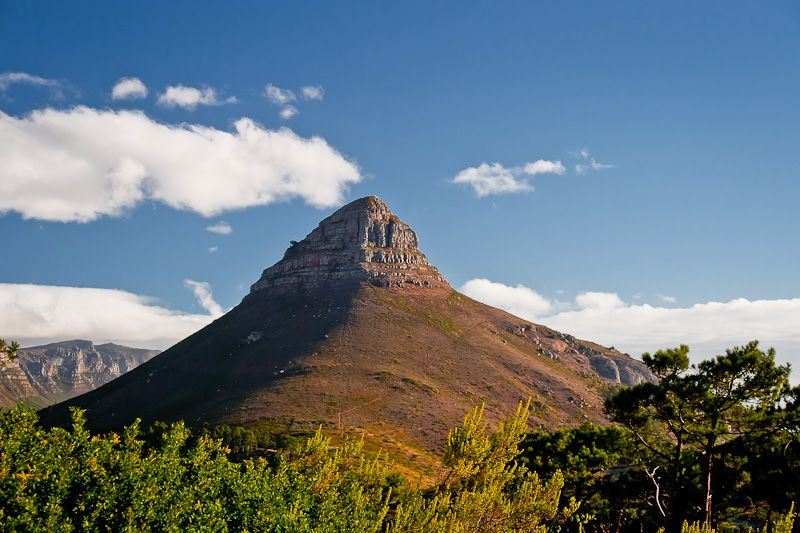

Hiking spots
Walk Up Lions Head
Lions Head in Cape Town is the distinctive shaped mountain slope found alongside Table Mountain. The proud lion overlooks the city and Table Bay on one side, and the scenic Atlantic Ocean coastline on the other. On a clear day the views from atop Lions Head are spectacular and great for taking photographs of the Cape Peninsula and Robben Island. It is a spectacular walk to the top and although it can be quite steep at times, the stunning views of Cape Town on the way up will keep you motivated to reach the top

Table Mountain
A ride up our famous cable car is possibly one of the very best ways to experience Cape Town, and yet it’s still on the bucket list of many Capetonians, who have yet to experience the thrill. There’s no time like the present to take advantage of the wonderful specials listed below:
Elephant's eye cave in silvermine
The walk up to Elephant’s Eye Cave on the Tokai side of Silvermine Nature Reserve is a pleasant, easy going hike that takes about two hours to do from the parking area near the dam in Silvermine Nature Reserve. It is a fun trail to do with young children.